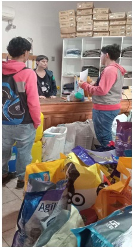

Distribuición y comercialización de las bolsas
Distribución de las bolsas ecoamigables a Veterinarias y Forrajeras comprometidas con el proyecto Como agradecimiento a las veterinarias y forrajeras que colaboraron con nuestro proyecto, les entregamos gratuitamente parte de la producción de bolsas ecoamigables para que las regalen a sus clientes. Esta distribución no solo reforzó nuestro vínculo con estos establecimientos, sino que también les proporcionó una solución práctica y ecológica para reemplazar las bolsas de plástico. Esperamos que esta acción incentive a la comunidad a reutilizar reciclar para reducir los residuos urbanos. Como agradecimiento a las veterinarias y forrajeras que colaboraron con nuestro proyecto, les entregamos algunas bolsas ecoamigables en forma gratuita.
Comercialización de la Producción
Con el resto de las bolsas producidas, decidimos lanzar una pequeña campaña de comercialización. En feria de ciencia instancia local aprovechamos para comercializarlas y también tenemos pendiente la invitación que nos hizo Clara raspo para mostrar nuestro proyecto en el día del cumpleaños de la ciudad. Para establecer el precio de las mismas realizamos una investigación de mercado que consistió en averiguar en distintos comercios cual era el precio de una bolsa de compra reutilizable. La comercialización de las bolsas tuvo una buena recepción, y los fondos obtenidos nos permitirán seguir adelante con nuestro proyecto y proyectarnos a futuro con nuevas ideas innovadoras.Distruibición de las bolsas
Comercialización de las bolsas
 Volver a la página principal
Volver a la página principal